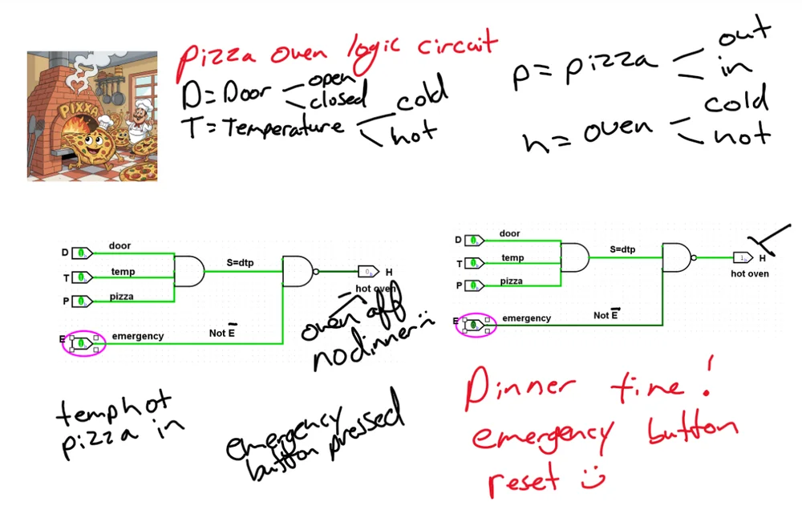
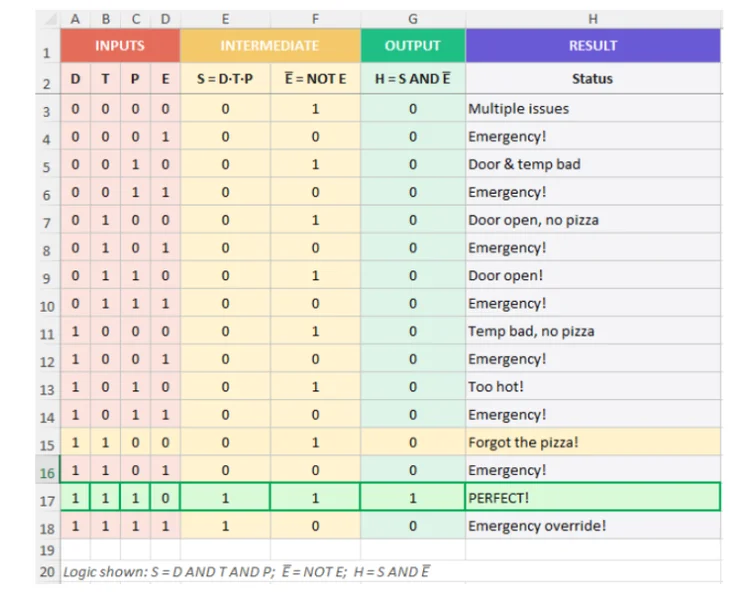

Unit 2 / Logic
Unit 2: Logic gates and Boolean algebra
Two early pieces on Boolean logic: a reflective post, written with little hands-on experience of digital logic, and a small control circuit built in a simulator. A peer’s reply to the post is not published.
Task A: my post
I’ve only got a little hands on experience with digital logic so far, mostly from small experiments and reading recent papers. It’s easy to treat AND, OR and NOT as tidy truth table rules, and I was surprised to see echoes of Aristotelian A E I O propositions. In practice, though, it doesn’t line up so easily.
Look, when you get into the real world, it’s not just neat little symbols on a whiteboard anymore. You’re dealing with actual physical things like tiny transistors that have to flip on and off. Once you try to wire a mountain of those things together just to get a computer to do basic math, the whole project turns into a massive brain melting jigsaw puzzle. You realize that perfect logic has to live in the real world. For instance, Elahi (2022) explains carry lookahead adders as a clever shortcut. Instead of waiting for a carry to ripple through every single bit—which is slow—they use generate and propagate signals to predict it ahead of time. It’s much faster, but there’s no free lunch; you’re trading circuit space and extra heat for that speed.
Software logic has its own set of gotchas. In Python, short circuiting can save time. If the first part of an and statement is false, the interpreter just gives up and moves on. It’s efficient, sure, but it’s also a great way to accidentally skip a function call you actually needed to run. SQL is even more of a black box. You might write a WHERE clause that looks straightforward, but the database engine is going to do whatever it thinks is fastest, whether that is reordering your logic or using an index. As Mackenzie and Moffat (2023) point out, if you ignore how the execution plan handles your predicates, a simple query can easily turn into a massive bottleneck.
Most of us probably notice Boolean logic first in a search bar. It’s basically set theory in the wild: use AND or NOT to sieve through the noise. But pure Boolean search is a blunt instrument; it does not account for nuance. That is why the shift toward AI is interesting. Islam et al. (2025) suggest that the real sweet spot for tasks like patent research is combining strict Boolean rules with AI ranking. That way you get the precision of formal logic, but the AI can still catch relevant results even if the user did not type the exact right keywords.
Looking back at what I’ve learned, truth tables should be taught alongside real life examples. It’s one thing to know the logic; testing it under realistic conditions is a whole new challenge.
References for Task A
- Elahi, A. (2022) Computer systems: digital design, fundamentals of computer architecture and ARM assembly language. 3rd edn. Cham: Springer.
- Islam, A.M., Vacarneau, R., Rodriguez, J.E., Surdeanu, M. and Slepian, M.J. (2025) ‘Synergy of artificial intelligence and Boolean search in patent prior art assessment’, paper presented at Intellectual Property Scholars Conference (IPSC) 2025, DePaul University College of Law, Chicago, IL, 7–8 August 2025. Available at: https://law.depaul.edu/academics/centers-institutes-initiatives/center-for-intellectual-property-law-and-information-technology/programs/ip-scholars-conference/Documents/IPSC%202025/Papers/Slepian%20-%20Paper.pdf (Accessed: 4 February 2026).
- Mackenzie, J. and Moffat, A. (2023) ‘Index-based batch query processing revisited’, in Kamps, J., Goeuriot, L., Infante-Moro, A., Russell-Rose, T. and Kruschwitz, U. (eds.) Advances in Information Retrieval: 45th European Conference on IR Research, ECIR 2023. Cham: Springer, pp. 86–100.
Task B: the pizza oven circuit
I have always understood concepts better when I can picture something real, so I ended up modelling a pizza oven. Why? I had pizza tonight, and the idea just kind of stuck. It makes sense to have an oven heat up when: the door is closed, the temperature looks about right, a pizza is actually in there, and the emergency switch is not active. The switch part was for a restaurant, not my kitchen. On paper that becomes H=DTP and not {E}. Into the simulator with this logic plan.
I bounced between Digital Works and Logisim while building it. Digital Works was pretty old school with it being over 10 years since it has been supported. Logisim felt more open, but I did second guess myself a few times. Turns out it was the program, not the user. I started with just a long chain of AND gates and it seemed pretty easy. That usually means I missed something. And yes, the emergency cutoff needed a NAND to behave the way an oven actually would. The emergency switch need to be a 0 for everything to work.
Projects like this help me sort out how real systems behave, even if the model trims things down quite a bit

Text description of Figure 1
Inputs: D is the door (open or closed), T is the temperature (cold or hot), P is the pizza (out or in). H is the oven (cold or hot). D, T and P feed an AND gate whose output is S. S and the emergency input E feed a NAND gate whose output is H.
Left circuit: temperature hot, pizza in, emergency button pressed. H is 0 and the oven is off. Right circuit: the emergency button is reset. H is 1, hot oven.

Text description of Figure 2
Columns: inputs D, T, P and E; intermediate values S = D AND T AND P and not E; output H = S AND not E; and a status message. The logic shown is S = D AND T AND P; not E = NOT E; H = S AND not E.
H is 1 in one row only: D, T and P are 1 and E is 0, marked as perfect. When D, T and P are 1 and E is 1, H is 0, marked as emergency override. Every other row gives H = 0.